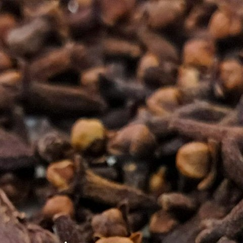
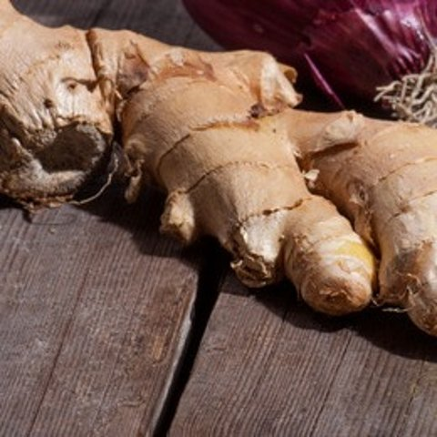
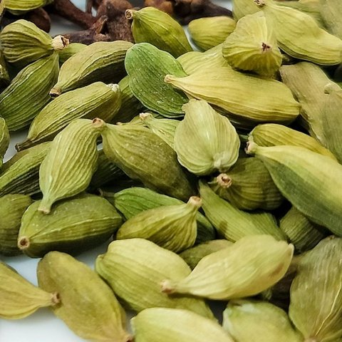
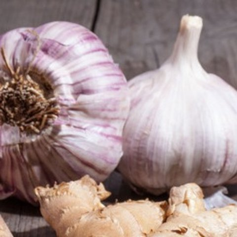

Clove
KEY COMPOUND · EUGENOLPressed on the gum to ease toothache.

Ten plants, eight plant parts and three world regions, all in one pot.
Each ingredient is a different species, and cooks use a different part of each one. Filter by plant part or by where it first grew.
Also in the pot: chili (Capsicum annuum, a fruit from the Americas) and nutmeg (Myristica fragrans, a seed from the Banda Islands of Indonesia). Names follow Kew’s Plants of the World Online.
Several kacchi spices are also household remedies in Bangladesh and across South Asia.

Pressed on the gum to ease toothache.

Taken as tea for nausea, colds and slow digestion.

Chewed after heavy meals to aid digestion and freshen breath.

Used in folk medicine against infections and for the heart.
These are traditional uses that research is still testing. This site is not medical advice.
Kacchi tastes entirely of Bangladesh, yet its plants were domesticated across Asia and the Americas and reached Bengal by trade.
Rice is the base of Bengali life; cardamom comes from South India and cinnamon from Sri Lanka.
Grown on a few Indonesian islands and carried by sea traders to Bengal’s ports for centuries.

Ancient crops of Central Asia, now grown in fields all over Bangladesh.
Portuguese traders brought them to South Asia in the 1500s and 1600s. Potato is now a Dhaka kacchi signature.